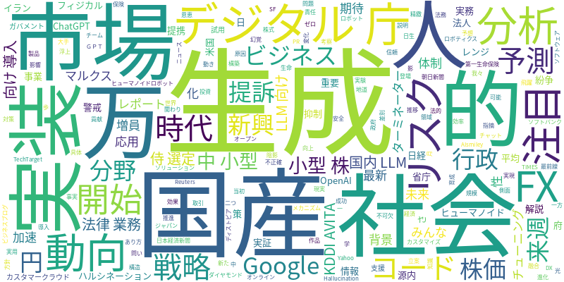

☁️ 今日のトレンドワード

📰 今日のピックアップニュース (10件)
AIが分析するFX市場の動向
みんなのFXが提供するAI分析レポートについて説明します。AIを活用することで、より精緻な市場予測や投資戦略の立案に貢献することが期待されます。最新のAI技術がFX取引にどう応用されているのか、その可能性を探ります。
AI社会の光と影、未来への問い
AIの進化がもたらす社会への影響を、SF作品「ターミネーター」のようなディストピアと、マルクス経済学のような社会構造の変化という二つの側面から考察します。AIがもたらす恩恵とリスク、そして我々が向き合うべき未来について深く掘り下げます。
Google、AIがコード生成を加速
Googleでは、開発チームの増員なしにコードの約50%をAIが生成する体制が構築されています。この背景には、AIによる開発効率の飛躍的な向上があり、ソフトウェア開発のあり方を大きく変えつつあります。AI活用の最前線が垣間見えます。
生成AI、差別化は「泥臭い実装」
生成AIの登場当初のような、単に「生成AIであること」だけでは製品が売れる時代は終わりました。実際のビジネスでの成功には、80%にも及ぶ地道なチューニングやカスタマイズといった「泥臭い実装」が不可欠であることが指摘されています。実用化の現実が語られています。
生成AIの「幻覚」リスクと対策
生成AIが事実に基づかない情報を生成する「ハルシネーション」というリスクについて、そのメカニズムと実務における具体的な抑制策を分かりやすく解説します。AIを安全かつ効果的に活用するための重要な知識を提供します。
新興市場の中小型株に注目、来週の株価予測
来週（3月9日～13日）の日経平均株価は5万2000円から5万8000円のレンジで推移すると予測されています。イラン紛争の動向が警戒される一方、新興市場の中小型株には底堅さが見られ、注目が集まっています。株式市場の最新動向を分析します。
OpenAI提訴、ChatGPTの法律業務利用
日本の生命保険大手、第一生命保険の米国法人が、OpenAIを提訴しました。ChatGPTが法律業務で不正確な情報を提供したことが原因とみられ、生成AIの法的責任や信頼性に関する問題が浮上しています。AIと法務分野の関わりに注目です。
KDDIとAVITA、国産ヒューマノイド開発へ
KDDIとAVITAが、フィジカルAI分野で戦略的事業提携を発表しました。国産ヒューマノイドロボットの社会実装を目指し、AI技術とロボティクスの融合による新たなソリューション開発が期待されます。ロボット社会の実現に向けた動きです。
デジタル庁、国産AI「7人の侍」選定
デジタル庁が、国産AI技術として「7人の侍」を選定しました。さらに、行政AI「源内」を全府省庁の18万人が利用する大規模実証実験を開始します。日本の行政分野におけるAI導入と、国産AI技術の育成に向けた重要な一歩です。
国内LLM技術で企業向けAI導入支援
カスタマークラウドは、デジタル庁の「ガバメントAI」で試用された国内LLM技術を活用し、企業向けのAI導入サービスを開始します。これにより、国産LLMのビジネス応用を加速させ、企業のDX推進を支援していく方針です。
今日のAI・テック業界は、生成AIの実用化とそれに伴う課題、そして行政や産業分野でのAI活用が急速に進展している様子がうかがえます。GoogleではAIがコード生成の半分を担うなど開発効率の向上に寄与しており、一方、生成AIの「ハルシネーション」リスクや、実ビジネスでの成功には地道なチューニングが不可欠であるという現実も浮き彫りになっています。また、AIの法的責任を問う動きとしてOpenAIが提訴される事例も発生しており、AIの信頼性と倫理的な側面もますます重要視されています。国内では、デジタル庁が国産AI技術の選定や行政AIの実証実験を進め、KDDIとAVITAは国産ヒューマノイドロボットの社会実装を目指すなど、AI技術の社会実装に向けた具体的な取り組みも活発化しています。これらの動きは、AIが社会のあらゆる側面に浸透し、その恩恵とリスクの両方と向き合いながら、より成熟したAI社会へと移行していく過程を示唆しています。